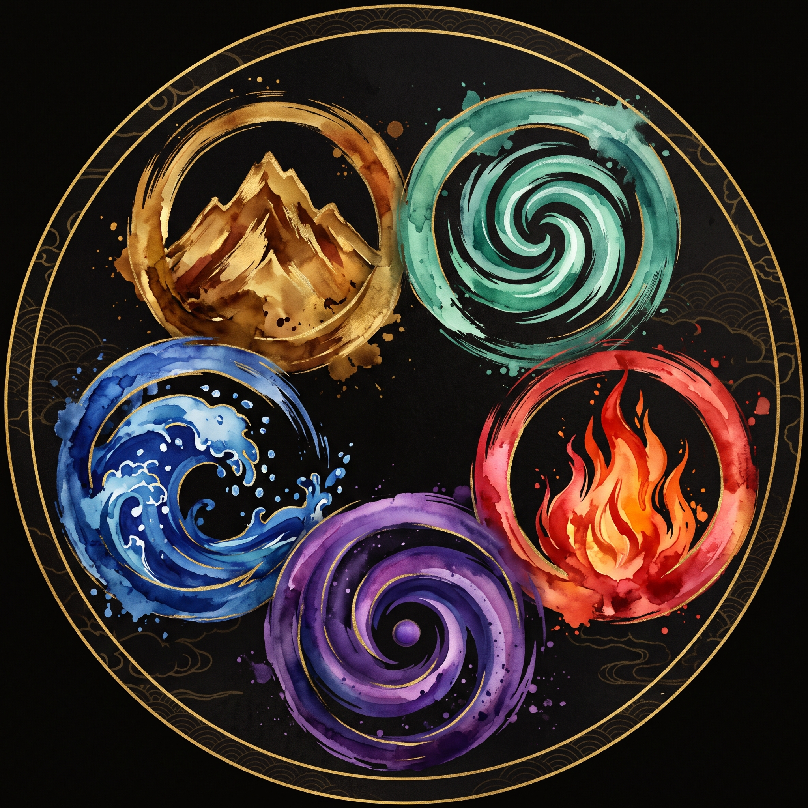
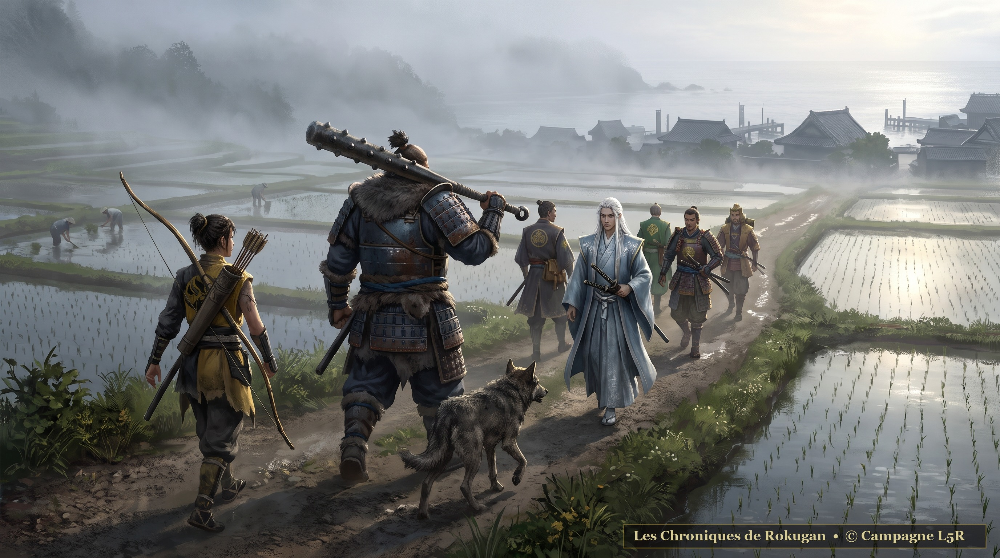
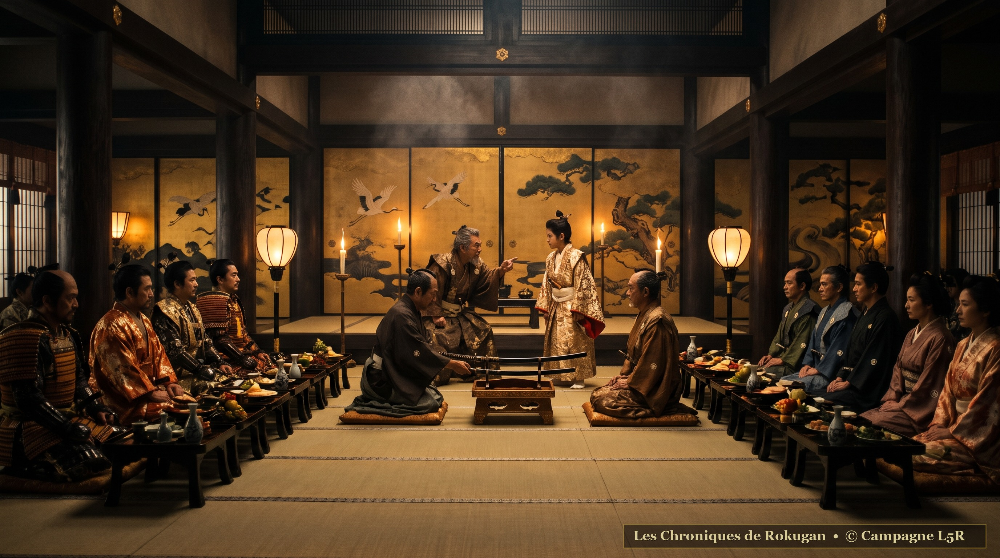
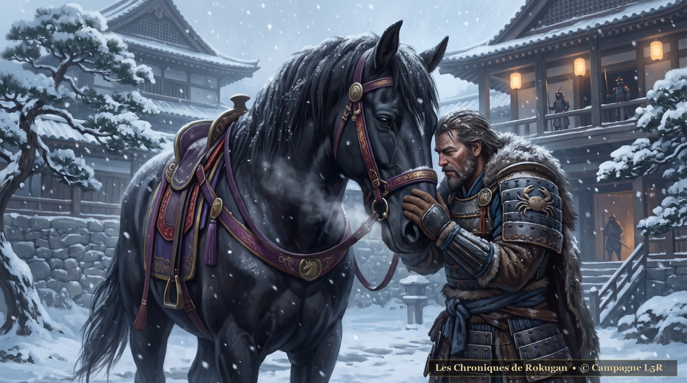

LES CHRONIQUES DE ROKUGAN
« Dans mon sabre, le vent. Dans mon cœur, le courage. Dans mes yeux, la mort. »
Retrouvez les récits complets et sonorisés de nos scénarios de campagne, forgez et sauvegardez votre samouraïs, ou consultez le Grimoire des sorts élémentaires.
🏯 LE DOJO DES SAMOURAÏS — VOS CRÉATIONS & LES HÉROS DE LA TABLE
Retrouvez vos personnages sauvegardés dans la Forge, l'escouade active et les figures historiques de la campagne.Hirohito Hida
Kishin no Tetsubō (鬼神の鉄棒) : Face à Hirohito au tetsubō, même les démons de Jigoku comprennent le sens du proverbe séculaire : une force dévastatrice que rien ne peut arrêter.
Okado Hiruma
Le Loup des Terres Cendreuses : Au-delà du Mur, quand le soleil s'éteint et que le vent porte la souillure de Jigoku, il n'existe pas de boussole plus fidèle que le regard d'Okado et l'instinct de son loup Shiro.
Tsuruchi Akira
L'Archer au Cœur de Lion : Porteur de la rédemption de Gusai et initié aux arts secrets des dompteurs Matsu avec son lion Raiju Une décoche chirurgicale et un dévouement absolu au devoir.
Ryujin Mirumoto
La Lame Purificatrice des Abîmes : Vaillant et pragmatique, il manie le Daisho avec une précision fulgurante. Son sacrifice de jade et sa lame ont terrassé le spectre séculaire de Yajinden.
Éclaireur aux yeux jaunes accompagné de son loup fidèle Shiro.
Colosse inébranlable maniant un tetsubō dévastateur sur les monstres.
Tireur d'élite pragmatique, médecin et chroniqueur principal de la table.
Mystique flamboyant en communion directe avec les esprits Kamis.
Champion du tournoi impérial de Topaze à la lame fulgurante.
Escrimeur silencieux maniant la technique légendaire des deux sabres.
L'ATELIER DU SAMOURAÏ — OUTILS INTERACTIFS
Création de fiche avec les 20 questions, grimoire et export vers le Carnet de Rokugan.Forge de Personnage
Calcul automatique des 5 Anneaux, affichage conditionnel Katas/Sorts, questionnaire des 20 questions, plateau de dés Roll & Keep et impression PDF A4.
Grimoire des Prières & Sorts
Consultez les invocations élémentaires (Terre, Eau, Feu, Air, Vide) et les Kihos de la Confrérie avec filtres par rang et élément.
Carnet de Rokugan
Exportez votre fiche directement au format JSON compatible avec l'application Carnet de Rokugan pour vos séances de jeu sur table.
Scénarios de la Campagne du MJ David
Lisez ou écoutez les récits intégraux rédigés par les joueurs, illustrés scène par scène.

Scénario 1 : Championnat de Topaze
La rencontre des novices sur la route de Tsuma, l'énigmatique Megumi, les épreuves du tournoi impérial et l'assassinat nocturne du daimyo du Clan du Blaireau.

Scénario 2 : Meurtre au Château de Kyoteï
Invités au banquet du Festival des Morts par le daimyo Tsume Retsu, les PJ sont mandatés comme magistrats après son assassinat derrière un plancher rossignol.

Scénario 3 : Le dernier voyage
Guidés à travers la neige par Xian, l'étalon de Shinjo Shimura, les samouraïs découvrent le jardin zen d'Ikko et affrontent une cellule secrète du Kolat.
LES HUIT GRANDS CLANS DE L'EMPIRE
Histoire, familles vassales, doctrines du Bushido et accès direct à la création.Aides de Jeu & Arbitrage Rapide
Guides de référence immédiate imprimables pour les joueurs et le MJ en pleine séance.Combat & Duels Iaijutsu
Les 3 étapes d'un round d'escarmouche, les 5 postures (Attaque, Attaque Totale, Défense, Défense Totale, Centre), le duel en 3 phases et les Augmentations.
Code du Bushido & Honneur
Les 7 vertus cardinales, la trinité sociale (Honneur, Gloire, Statut), le barème officiel de la Table 2.3 et les règles des Doigts de Jade contre la Souillure.
Étiquette & Coutumes
L'Ordre Céleste (Kuge, Buke, Heimin, Hinin), le protocole du Daisho, la règle des cadeaux en 3 refus, la cérémonie du thé et l'art de sauver la face.